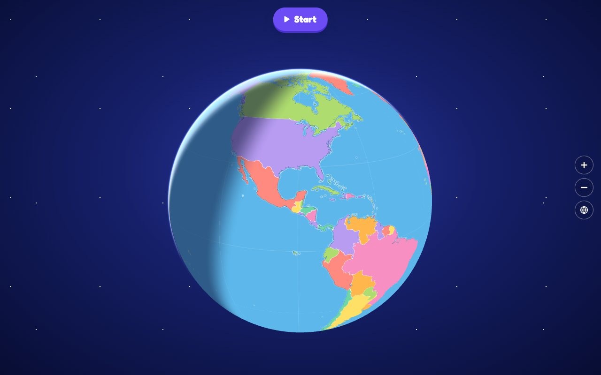

How it started
Kinder Geo is a vibe-coded app I made for my kid.
It started with a globe. My kid would bring the globe to me and ask me to call out a country, so he could find it. Then he came up with the idea of points.
I turned that whole back-and-forth into this game, together with him.
Later, his friends and cousins asked for other countries too. So the game grew: now it also has the states, provinces and districts inside eight countries.
